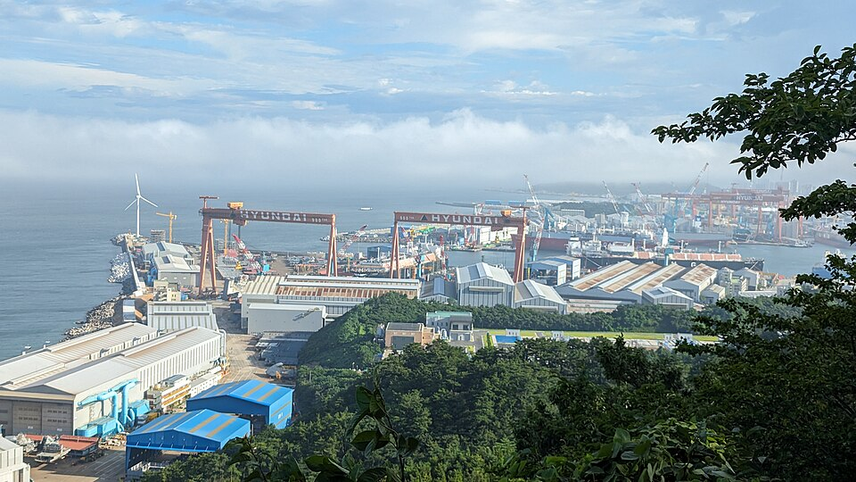

설립연도
2019년
울산에 세계 최대 규모의 조선소를 가진 회사예요. LNG 운반선, 대형 컨테이너선 같은 상선과 군함·잠수함을 만들고, 선박용 엔진도 직접 만들어요. 2025년 12월 HD현대미포와 합쳐 통합 HD현대중공업으로 새로 출발했어요.
칸에 마우스를 올리거나 누르면 자세한 설명을 볼 수 있어요.

천연가스를 영하 162도로 실어 나르는 LNG 운반선, 대형 컨테이너선, 유조선 등을 만들어요. 매출의 대부분이 여기서 나와요.
대표 예LNG 운반선, 컨테이너선, 유조선
한국 해군의 이지스 구축함과 잠수함을 만들고, 해외 군함 수출과 미국 해군 함정 정비 사업도 넓히고 있어요.
대표 예이지스 구축함, 잠수함, 호위함
바다 위에서 원유·가스를 뽑아 올리는 거대한 해양 설비를 만들어요.
대표 예해양 생산 설비(FPSO 등)
선박을 움직이는 대형 엔진과 발전용 엔진을 직접 만들어요. 대형 선박 엔진은 세계 1위권이에요.
대표 예선박용 대형 엔진, 힘센엔진
| 기간 | 매출 | 영업이익 | 순이익 |
|---|
사업마다 겨루는 상대가 달라요